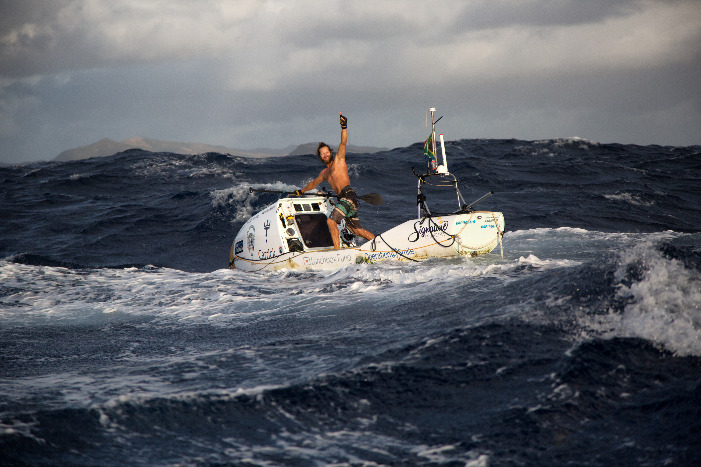
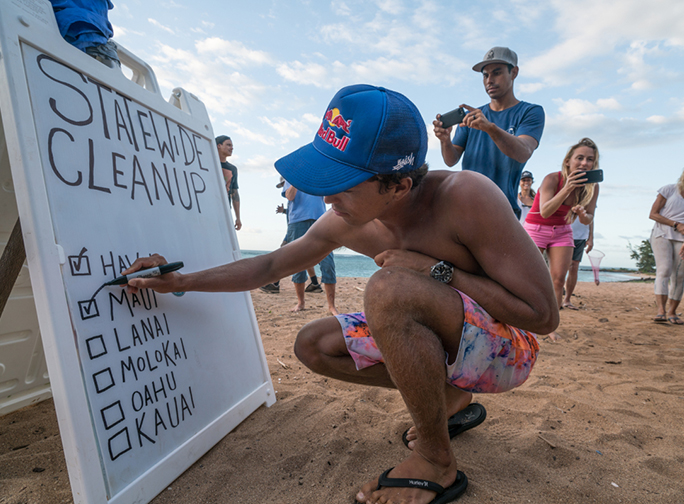
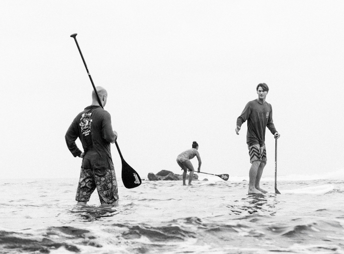

Chris Bertish: Completes Transatlantic Crossing
On March 9th 2017 Chris Bertish completes the first transatlantic voyage on a stand up paddlboard. He spent 93 days alone at sea and completed over 2 million paddlestrokes to cover 4,050 nautical miles.

Kai Lenny "Downwind Voyage for Change"
Kai Lenny led a statewide coastal cleanup to help bring awareness to plastic pollution in the Hawaiian Islands. He led cleanups on six islands. Hawaii, Maui, Lanai, Molokai, Oahu, and Kauai. While moving from island to island Lenny's only source of travel was hydrofoiling, kiteboarding, or paddleboarding.

Paddle Society Launches a SUP Coaching Website
Paddle Society launches a membership SUP and outrigger training and coaching website. They are offering customized training programs, video stroke analysis, e-Learning courses, educational content and a community forum.